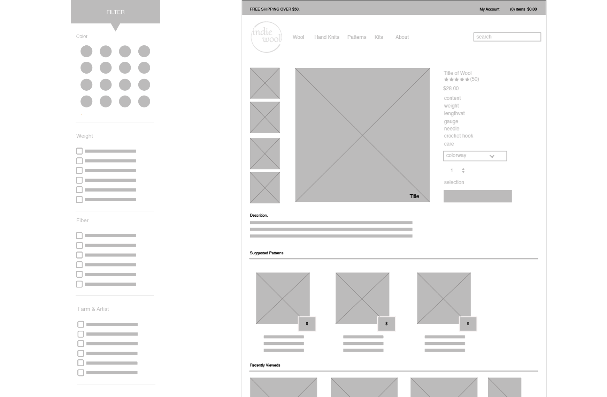
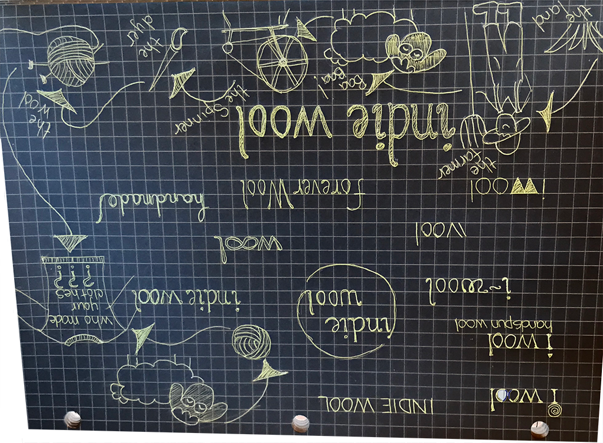
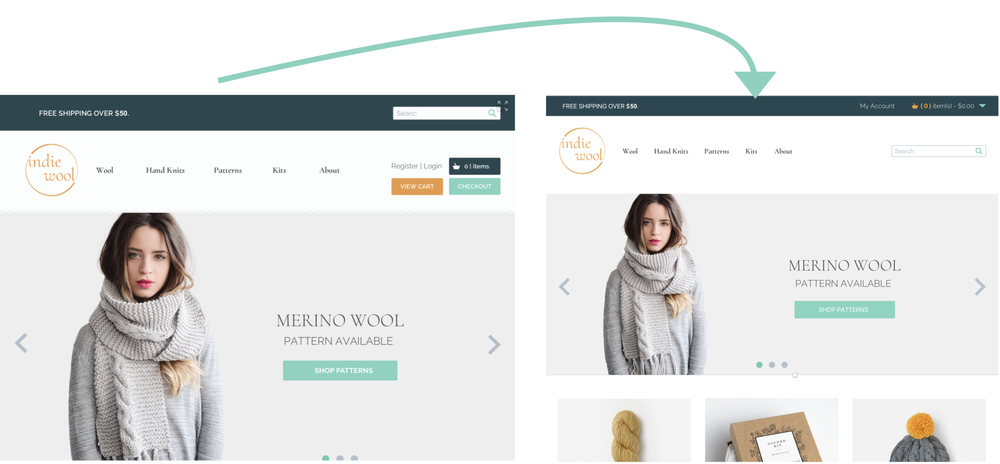
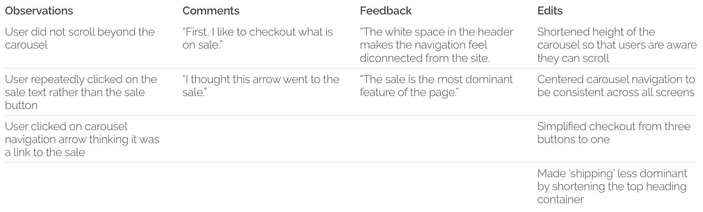
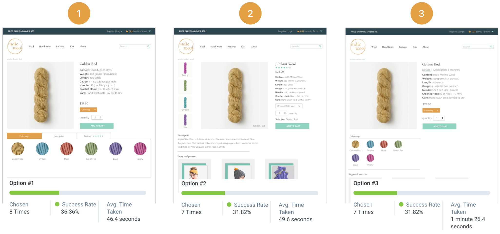

"
Second to oil, fashion and textiles is the most polluting industry in the world. Every stage in a garment’s life threatens our planet and its resources
- Rachel Kibbe ( Business of fashion)
Fast fashion comes at a great price to both human life and the environment. Forced labor is pervasive in garment factories and labor intensive crops such as cotton . Further damage is done by the use of toxic chemicals that make their way into the environment and into our bodies.1
| 97% | of clothing sold in the US is made overseas 2 |
| 79% | of people trafficked are victims of forced labor 2 |
| 1.3 trillion | gallons of water used each year for fabric dyeing 3 |
| 15 million | tons of textile waste is generated each year 3 |
| 70 million | gallons of oil are used each year to produce synthetic fibers 4 |


A slow fashion marketplace dedicated to using ethically produced domestic fiber. A marketplace that connects fiber artists, fashion enthusiasts, and designers with small farms. 100% transparency from sheep to shawl.
| 33% | of consumers buy from brands they believe are doing social or environmental good 6 |
| 21% | of people actively choose brands with clear sustainablity credentials 6 |
A competitive analysis lead me to look deeper into companies that produce domestic fiber or have an established platform for independent fiber artist. Green Mountain Spinnery, Brooklyn Tweed, Row House, and Etsy are the four companies I focused on. While each company has considerable strengths, the market still lacked a dedicated slow-fashion platform with full transparency that offered both eco-friendly fiber for artists and ethically made garments.


To understand the relationship users have buying, selling, and working with fiber, I conducted surveys throughout the fiber arts community. The results of 33 respondents revealed knitting as the most practiced fiber art. I then spoke with knitters about their fiber preferences and what they like and dislike about their current buying and selling platforms. The results helped me to better understand users goals and frustrations and develop stories and personas that reperesent the knitting community.
| User Story | Task | |
|---|---|---|
| As a user | I want to browse products | |
| As a user | I want to view details about specific products | |
| As a user | I want to view ratings and reviews for a product | |
| As a user | I want to add products to my cart | |
| As a user | I want to pay for payments with credit card, Amazon payment or Paypal | |
| As a new user | I want to sign up for an account | |
| As a new user | I want to checkout as a guest | |
| As a returning user | I want to log into my account | |
| As a returning user | I want to view history of transactions | |
| As a non-knitter
purchasing a gift |
I want to view highest rated items | |
| As a non-knitter
purchasing a gift |
I want to view items by color & price | |
| As a non-knitter
purchasing a gift |
I want to view promotions & sales | |
| As beginning knitter
purchasing a gift |
I want to purchase a kit that contains all materials | |
| As a beginning knitter
purchasing a gift |
I want to view the difficulty level of patterns & kits | |
| As a conscientious
consumer purchasing a gift |
I want to learn about the fiber before making a purchase | |

To create, organize, and structure the content for Indie Wool I created a list of keywords along with their corresponding search volume. I then conducted a card sort to help develop the beginning of an optimized sitemap. The information gathered from the card sort was used to establish the main navigation and sub-categories. I detailed the content of each page in a spreadsheet to assist me in drafting wireframes.
Flow charts were used to map user tasks and eliminate issues such as cart abandonment. I took into consideration all the reasons users abandon their shopping carts and designed a seamless guest checkout with a simple design that contained all relevent information and allowed the user to know exactly where they are in the checkout process.

After much research, I began to sketch ideas and explore color palettes. One of the initial concepts was "Forever Wool", in the end "Indie Wool" was a better representation of the brand with a foundation of independent fiber artists. I used preference testing early in the brand design process and discovered that the initial color palette and fine lines of the design were percieved as a luxury brand. I wanted Indie Wool to be welcoming, approachable and lively! A few iterations later a cheerful palette emerged along with a clean simple logo that reperesents the collective voice of passionate fiber artists.
Indie Wool is a slow fashion marketplace for fiber & fashion enthusiasts. We support independent fiber artists and farmers that share the same passion for hand-made and the same commitment to using and producing ethically sourced domestic fiber.
#E29F4C
#F0F0F0
#2E464F
#4A4A4A
#FFFFFF
#7DCBB5
A B C D E F G H I J K L M N O P Q R S T U V W X Y Z
a b c d e f g h i j k l m n o p q r s t u v w x y z
A B C D E F G H I J K L M N O P Q R S T U V W X Y Z
a b c d e f g h i j k l m n o p q r s t u v w x y z
I developed a prototype using Sketch and Invision. Once the prototype was complete I observed users trying to complete specific tasks such as complete a purchase, read reviews, and checkout as a guest. The results of the preference test for the item page revealed only a slight preference for the tab design. I ran further usability tests and discovered that while the design preference was for one design the design without tabs performed better from a usability stand point.
  A Pew Research Center study found that 77% of Americans owned smartphones. With an increasing rate of ecommerce purchases made from mobile devices it was important for Indie Wool to have a great user-experience across all devices.